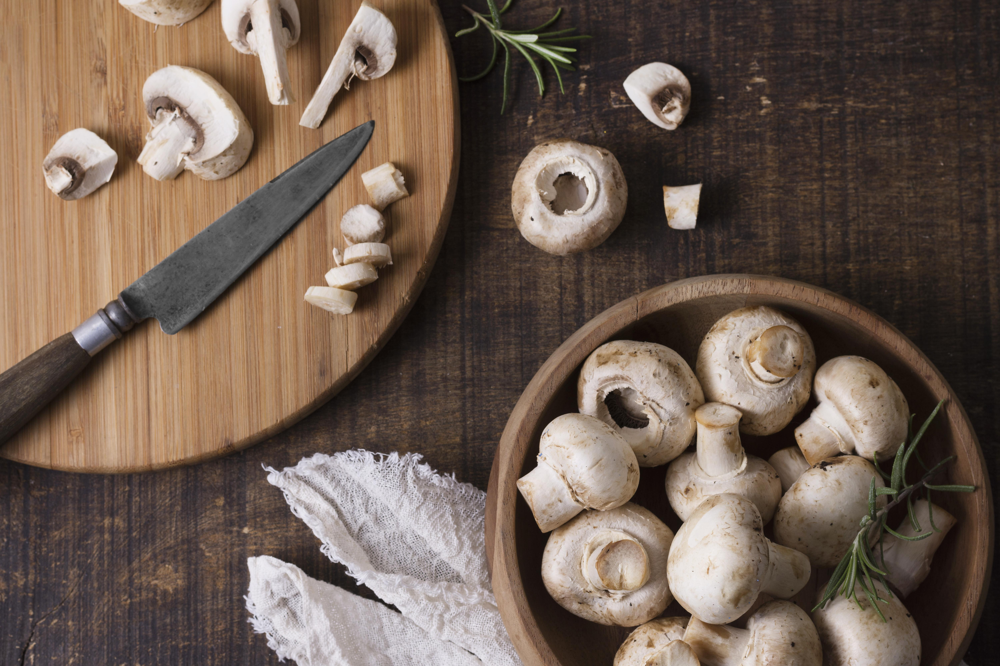

Mushrooms have been revered for their medicinal properties for thousands of years across various cultures. Modern science is now validating what traditional medicine has long known - mushrooms are nutritional powerhouses with remarkable health benefits.
Immune System Support
Many mushroom varieties contain beta-glucans, complex carbohydrates that help modulate the immune system. These compounds can enhance immune function when needed while preventing overactive immune responses.
Top Immune-Boosting Mushrooms:
- Shiitake - Contains lentinan, a powerful immune modulator
- Reishi - Known as the "mushroom of immortality"
- Turkey Tail - Rich in PSK and PSP compounds
- Maitake - High in D-fraction beta-glucans
Antioxidant Properties
Mushrooms are excellent sources of antioxidants, including selenium, vitamin C, and unique compounds like ergothioneine. These antioxidants help protect cells from oxidative stress and may reduce the risk of chronic diseases.
Cardiovascular Health
Research suggests that regular mushroom consumption may support heart health through various mechanisms:
- Cholesterol-lowering effects from beta-glucans
- Potassium content that helps regulate blood pressure
- Compounds that may improve circulation
- Anti-inflammatory properties that benefit vascular health
Cognitive Function
Certain mushroom species show promise for supporting brain health and cognitive function. Lion's Mane mushroom, in particular, contains compounds that may stimulate nerve growth factor (NGF) production.
Nutritional Profile
Beyond their medicinal properties, mushrooms are low in calories but rich in essential nutrients including:
- B-vitamins (especially B2, B3, B5, and B12 in some varieties)
- Vitamin D (when exposed to UV light)
- Selenium and copper
- Potassium and phosphorus
- High-quality protein with all essential amino acids
Why HaveMushroom.com is Perfect for Health Brands
The growing awareness of mushrooms' health benefits makes this domain incredibly valuable for supplement companies, health food brands, wellness platforms, and educational sites focused on functional foods and natural medicine.
Incorporating Mushrooms into Your Diet
To maximize health benefits, consider incorporating a variety of mushrooms into your diet. Whether fresh, dried, or in supplement form, mushrooms offer versatile ways to boost nutrition and support overall wellness.
As research continues to unveil the remarkable properties of fungi, the mushroom industry represents one of the fastest-growing sectors in functional foods and nutraceuticals.